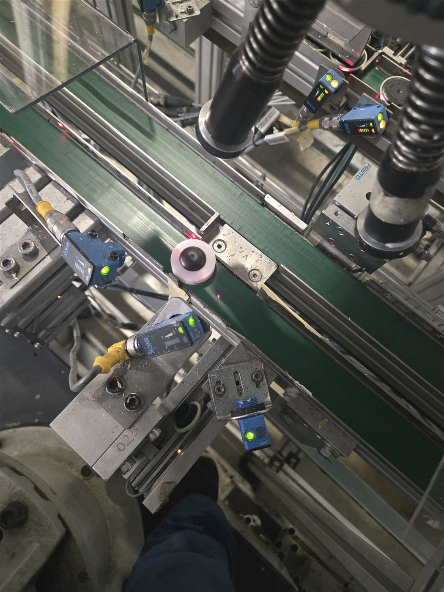
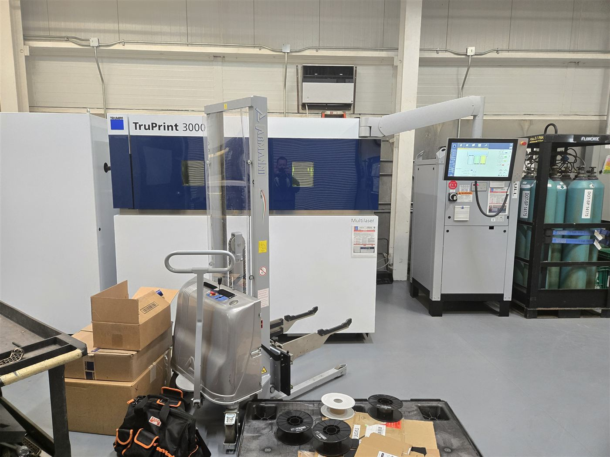

Robot Specialist
BMW Manufacturing · Greer, SC
Feb 2023 – Present
- Lead technical development of paint shop automation across ABB, Dürr, and Fanuc robots: new model programming, design changes, and continuous improvement.
- First responder for planned and unplanned downtime, helping sustain 95% equipment availability.
- Key contributor to holding 60-second station cycle times through path optimization and process re-sequencing (see how).
- Offline programming in RobotStudio, Process Simulate, and Dürr 3D Onsite. Design and 3D print custom robot tooling.

